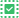

Shared across modules icon review
ANTZ Rounded: every icon in the Shared across modules module. Line and filled at 16, 24 and 48px (48px sits on a tile), next to the old mobile SVGs they replace. Icons are inlined from library/line and library/filled when this sheet was generated. Old SVGs load live from app/public/current.
| Icon | Line 16 · 24 · 48 | Filled 16 · 24 · 48 | Metaphor | Old SVG |
|---|---|---|---|---|
bookmark_addedBookmarked / favouritedraft |
Bookmark with a check. | |||
checkbox_partialCheckbox, partly selecteddraft |
Rounded square with a minus (indeterminate). |  |
||
line_start_circleTimeline start pointdraft |
Circle at the start of a line. | |||
note_altAssessment / notesdraft |
Clipboard (shared CLIPBOARD base) with a pencil stroke. |